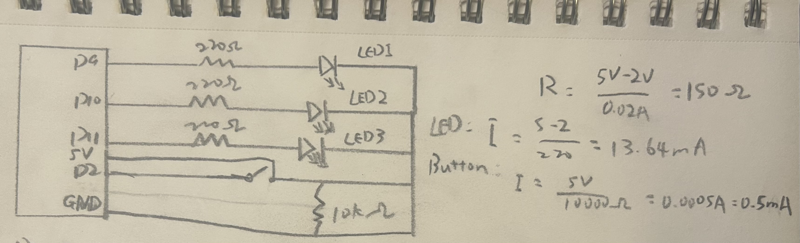
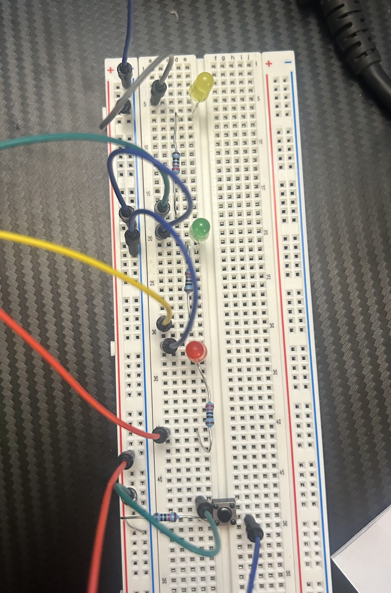

For this assignment, I created a simple light-up circuit using three LEDs and a push button. When the button is pressed, two LEDs turn on while the third gradually fades in and out. When the button is released, the LEDs turn off.

I connected three LEDs to pins 9, 10, and 11, each with a 220 Ohm resistor to limit the current. The button is connected to pin 2 with a 10k Ohm pull-down resistor, which keeps the input LOW when the button is not pressed.
int led1 = 9; // assign led1 to pin 9
int led2 = 10; // assign led2 to pin 10
int led3 = 11; // assign led3 to pin 11
int button = 2; //assign the button to pin 2
void setup() {
// declare pin 9,10,11 to be output:
pinMode(led1, OUTPUT);
pinMode(led2, OUTPUT);
pinMode(led3, OUTPUT);
// set the button as input.
pinMode(button, INPUT);
}
void loop() {
// check if the button is pressed
if (digitalRead(button) == HIGH) {
// turn on led 1
digitalWrite(led1, HIGH);
// turn on led 2
digitalWrite(led2, HIGH);
// gradually increase Led 3 brightness
for (int i = 0; i <= 255; i++) {
// set led3 brightness
analogWrite(led3, i);
// wait for the next brightness level
delay(5);
}
// gradually decrease led 3 brightness
for (int i = 255; i >= 0; i--) {
// set led3 brightness
analogWrite(led3, i);
// wait for the next brightness level
delay(5);
}
} else {
// turn off led 1
digitalWrite(led1, LOW);
// turn off le 2
digitalWrite(led2, LOW);
// turn off led 3
analogWrite(led3, 0);
}
}



Pressing the button turns on the first two LEDs, while the third LED fades in and out using PWM. The for loops gradually change its brightness.
.jpeg)
analogWrite(64) produces approximately a 25% duty cycle, analogWrite(128) produces a 50% duty cycle, and analogWrite(255) produces a 100% duty cycle. A higher duty cycle makes the LED appear brighter.
Assuming a 2V forward voltage, each LED draws (5 - 2) / 220 = 13.64mA. If all three LEDs are on, the total LED current is approximately 40.91mA. Including the 0.5mA through the button's pull-down resistor, the total external circuit current is approximately 41.41mA when the button is pressed.
I measured the voltage across each LED using a multimeter. LED 1 measured 2.02V, which was very close to the assumed 2V forward voltage. LED 2 measured around 2.60 to 2.64V, slightly higher than expected. LED 3 was continuously fading, so the multimeter readings fluctuated between approximately 0.18V and 1.85V due to PWM.